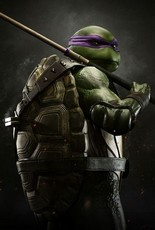

C'est le plus pacifique, il préfère de loin l'utilisation de la parole à celle de son bō pour régler les conflits.
Intellectuel et amateur de science, il est capable de modifier, réparer et comprend la plupart des technologies.
Son nom est inspiré du peintre et sculpteur florentin Donatello. Dans le dessin animé de 2012, il est fou amoureux d’April O’Neil.
Il porte un bandeau violet et utilise un bō pour arme.